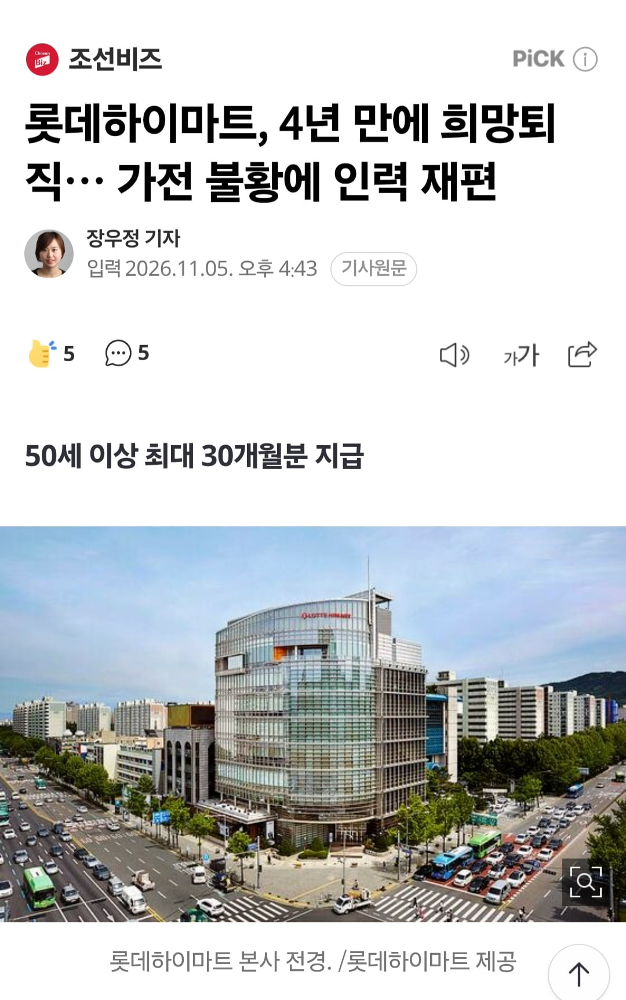
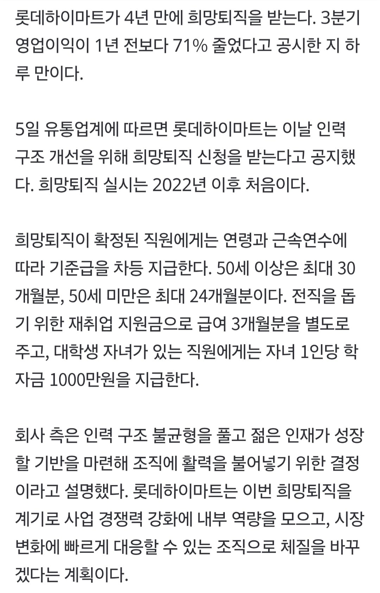

요약
3분기 영업이익이 전년보다 71% 감소.
인력 구조 개선과 경영 효율화를 위한 결정.
50세 이상: 최대 30개월분 기준급 지급.
50세 미만: 최대 24개월분 기준급 지급.
재취업 지원금: 급여 3개월분 별도 지급.
대학생 자녀 1명당 학자금 1,000만 원 지급.


요약
3분기 영업이익이 전년보다 71% 감소.
인력 구조 개선과 경영 효율화를 위한 결정.
50세 이상: 최대 30개월분 기준급 지급.
50세 미만: 최대 24개월분 기준급 지급.
재취업 지원금: 급여 3개월분 별도 지급.
대학생 자녀 1명당 학자금 1,000만 원 지급.
기본급만 주는거 아냐?
연봉이 아니라 기본급이라, 연봉의 30%~50% 정도임. 각종 수당이 모두 빠지기 때문인데 대부분 직장인이 기본급 절반 + 수당 절반정도로 설계되어 있음.
여기서의 수당은 거의 고정급에 가깝지만, 이렇게 “기본급의 두 배”, “기본급의 10%” 식으로 기본급을 기준으로 하는 규정을 저렴하게 적용하기 위해 기본급과 수당을 분리해 놓음.
평균연봉 5000정도라고 나오던디 수당포한인건가 이것도?
구체적인 건 모르겠지만 대부분 기업이 그렇게 되어 있음. “취업규칙”이라는 문서가 회사마다 있는데, 거기 구체적인 비율이 표시되어 있을 것임.
기본급을 높이면 여기 연동되는 세금, 건강보험 등등도 높아지기 때문에 보통은 법에서 허용하는 한도까지 수당으로 최대한 밀어넣는 편.
ㅇㅇ
하이마트 직원들은 노났지 사실ㅋㅋ
롯데에 인수되고
왜 년차기준이아니라 나이기준임?
최대써둔거봐서는 근속에따라 나뉘는듯
브랜드 매니저들 직고용으로 바꾼다고 할 때부터 알아봤다..
하이마트보다 백화점 본매장이 더 싸서 안간지 좀 됐네
캐시카우로 쪽쪽 빨아먹고 내다버리기
렌탈 팔고 이제 하이마트구나 ㅋㅋ
좆데가 잡으면 제대로 하는게 거의 없네 ㅋㅋㅋ
하이마트가 아직도 살아있었구나
동네에 덩그러니 있는 하이마트는 그냥 뭐 있는지 궁금하고 심심해서 둘러보는 곳이나 다름없음. 언제 한 번 구경하려고 들어가봤는데 직원이 너무 부담스러울 정도로 밀착해서 설명하는데 난 살 생각도 없는데 자꾸 그러니까 매출 압박을 강하게 받는거같았음. 잠실역 하이마트는 규모도 크고 거기가 본진이기도 하고 유동인구가 매우 커서 딱히 관심 없어도 지나가는 통로 중간에 하이마트가 있는거라 꽤 잘 나가는거 같던데 사람들이 많이 똑똑해져서 이런 곳도 상품 둘러보는 용도이고 맘에 드는거 있으면 사진찍어놓고 쿠팡이나 네이버쇼핑 최저가 알아보고 삼
어제 하이마트에서 아이폰17프맥 899,000원!! 하고 광고 있길래 직원한테 물어봄.
직원이 자기는 모바일 담당이 아니라면서 모바일 담당 오면 알아보고 곧 전화 준다고 내 전화번호까지 알려줌.
아직까지 연락 없음.
회사 두개가 하드캐리해서 GDP는 4만불 찍었는데
경제는 역대급 불황이네
3천이면 그나마 선방일듯 ㅋㅋ 박스피때보다 더 힘듬
그말하면 엄청 뭐라하는 사람들 많음
ㅇㅋㅇㅋ 삭제함 ㅋㅋㅋ
저때 나가면 재취업 힘든거 아님..? 안나가면 불이익있나
지금 같은 시기에 50이나 먹고 나가면 진짜 배달 뛰어야겠네
하이마트에서 물건 산적 없음 ㅠㅠ ㅋㅋㅋ 아니 접근성 왜 이럼
희망퇴직 안 받으면 어떻게 됨? 본사에서 해당 직원 내보내라고 지시해서 윗사람이 사소한 거 다 지적하고 매출에 도움 안 되는 무쓸모 직원으로 씌여서 퇴사 유도하는거임?
신혼 가전 하이마트에서 야무지게 잘 샀는데 많이 힘든가보네;
유진그룹이 엑싯 잘했네. 그 뒤에 산 동양시멘트가 죽 쒀서 문제지.
대감집은 그래도 나갈떄 돈이라도 주는구나... 연봉 5000이라 치면 1억은 넘네